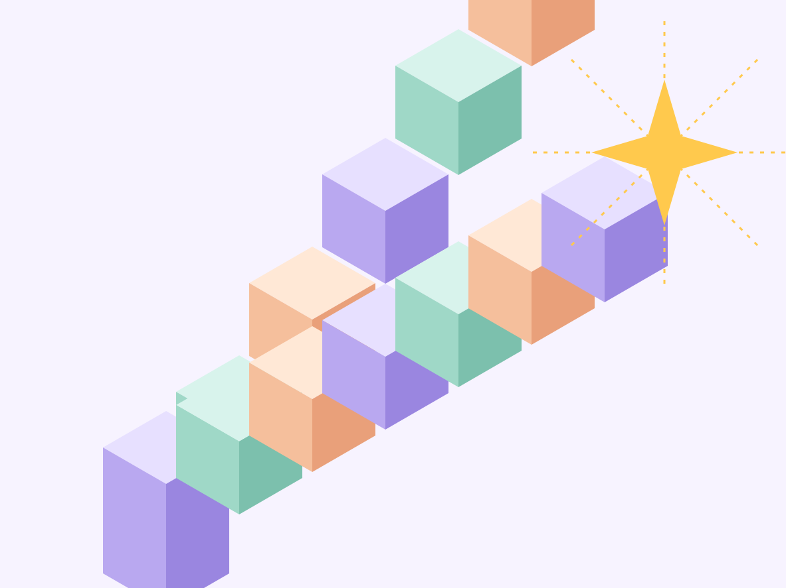
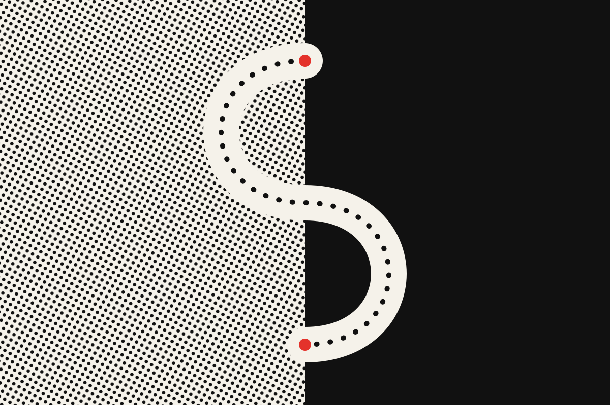
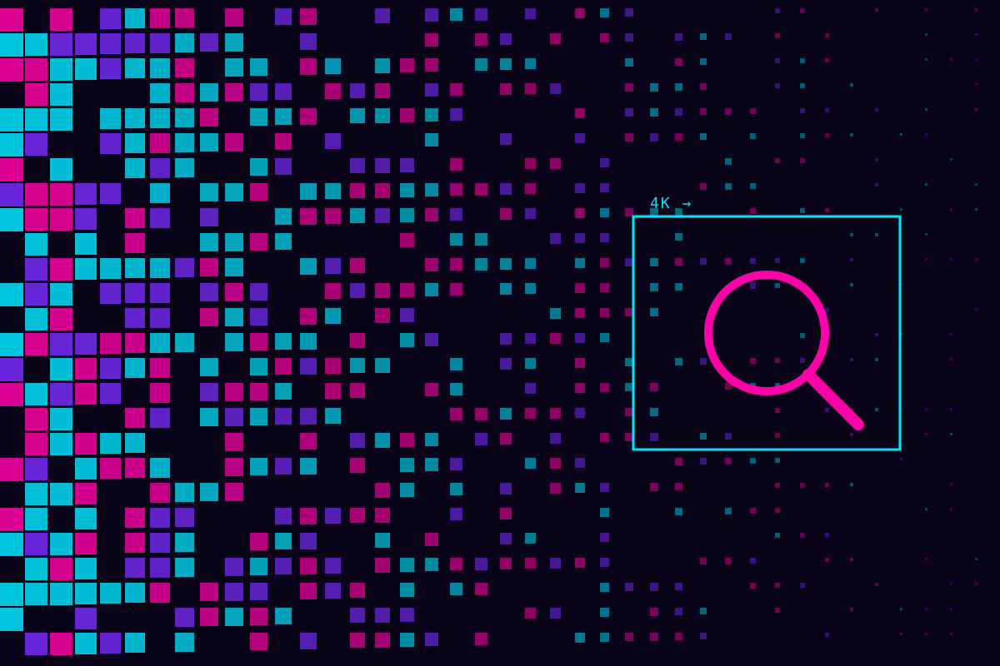
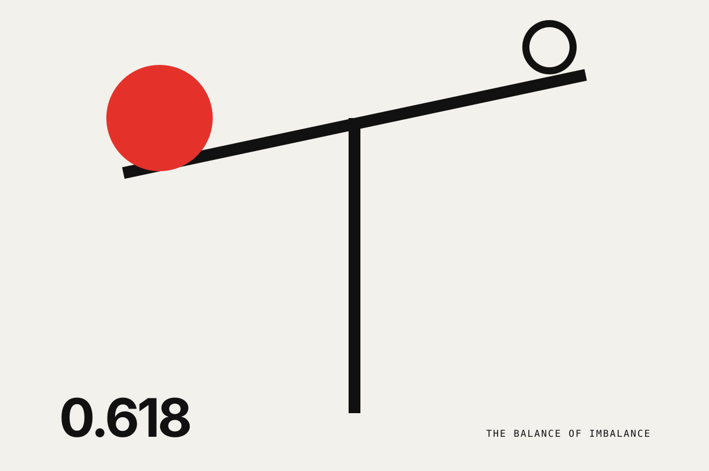
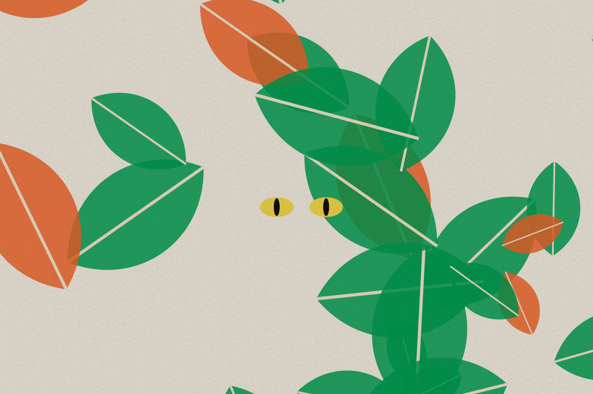
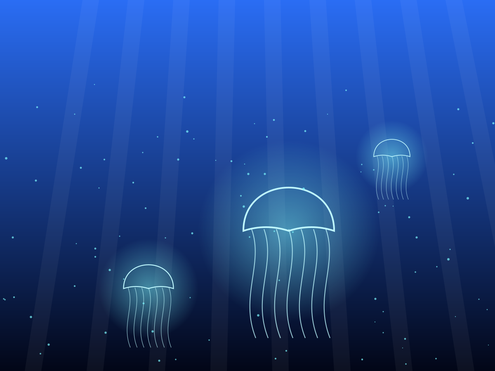
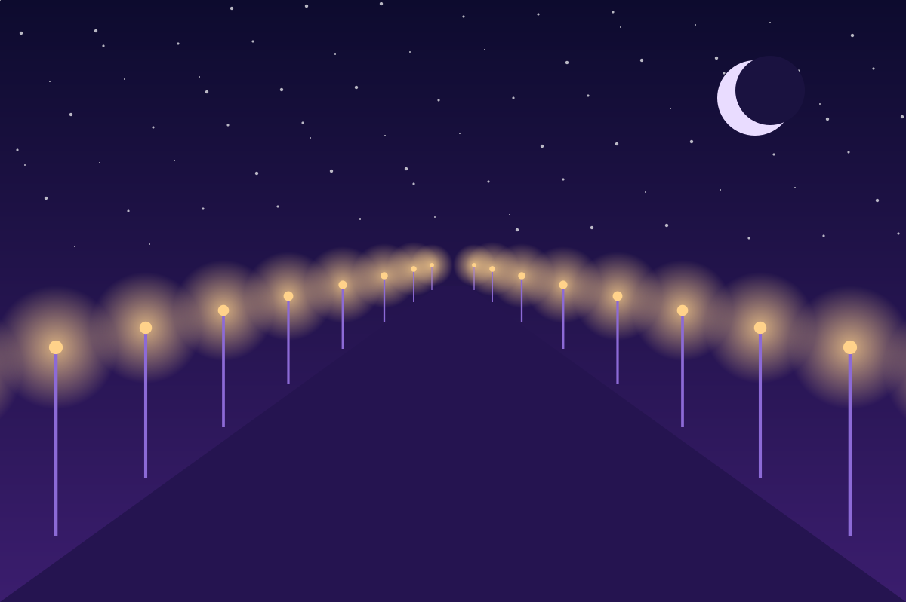
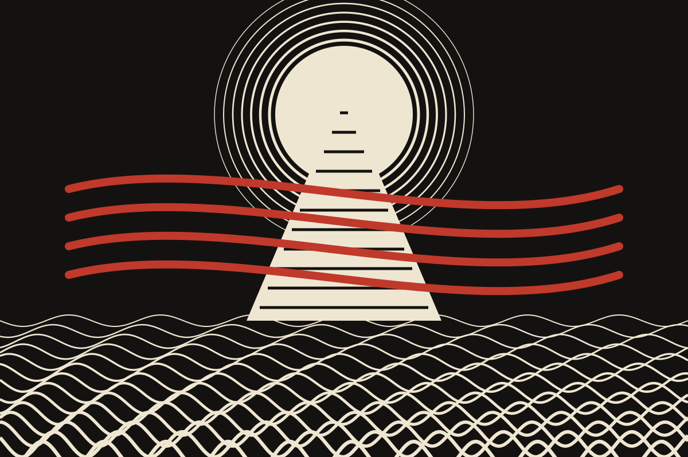

Musings
The Mystic
Oh eternal wanderer of the misty lands;
Continue Reading
Unto Inspiration...
In the deepest crevices of one's seemingly dark destiny, there are always uncannily hidden possibilities to derive inspiration from... It is in this situation, that mankind moves into desperation and utterly fails to der...
Continue Reading
Nemesis
Great was the rustling in the ground foliage;
Continue ReadingThe Pauper's Princess
Treading lightly across the silken floor,
Continue ReadingSpasms of Life
Shot through the arm or shot through the heart,
Continue ReadingNature's Dirge: An Oak's Hymn
Tucked into crevices laden with soil and weed,
Continue Reading
The Resolution Hypothesis
Resolutions. A word that has now perhaps inundated the day to day jargon of the modern youth, comes into gargantuan prominence at the onset of a new year… And of course a word that is closely intertwined with the student...
Continue Reading
The Balance of Imbalance
Nature has existed for eons now, and for an infinitesimal fraction of that, so has humanity in all its farcical glory. With the fleeting ravages of time, mankind has articulated towering constructs of science, philosophy...
Continue Reading
The Bestiary
The Lion is the King of the Jungle,
Continue Reading
The Abyss
Gentle at times and turbulent at others,
Continue ReadingThe Nomad
Wound by the yarn of the winter wool, she gazed
Continue Reading
Esplanades...
I Too many roads there are to take;
Continue Reading
The Churning of the Milky Ocean : A Great Indian Chronicle
In the stunning, utopian halls of pearl,
Continue Reading